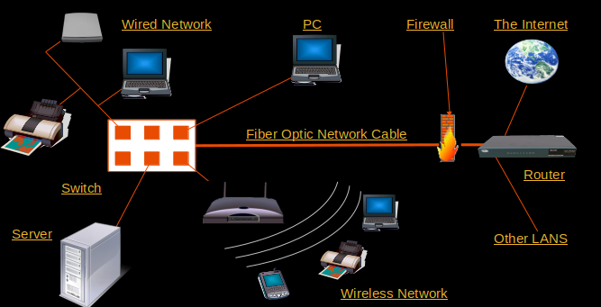

Networking Fundamentals
Jabir Ali V
## What is a Network ? - A network consists of two or more computers that are linked in order to share resources - A network includes different types of devices known as Networking devices - Most common types of Networks are - LAN (Local Area Network) - WAN (Wide Area Network) - MAN (Metropolitan Area Network) - PAN (Personal Area Network) - VPN (Virtual Private Network) --- <section>  </section> --- ## Network topology - Network topology refers to how devices are inter connected, eg:- - Bus - Star - Mesh - Tree - Hybrid - Ring <!-- A paragraph with some text and a [link](http://hakim.se). --> --- ## Networking devices - NIC : device where packet receives - Repeater : repeates the signal - Hub : mutliport repeater - Bridge : used to segment LANs - Switch : Used to send packets over network - Router : Forward data across network - Gateway : HW/SW act as entry of a network - Firewall : HW/SW with access control --- ## Protocol - A communication protocol is a set of rules for exchanging information over a network. - Network devices communicate via protocols - We use different protocols in network stack --- ## layers - Each layer abstracts the services of various lower layers - Provides a uniform interface to higher layers. - Each layer has specific purpose,which wraps or unwraps some data it is getting --- ## OSI Model - It is a reference model that specifies standards for communications protocols and also the functionalities of each layer. - 7 layers 1. Physical Layer : Transfer bits 2. Data-Link Layer : Deal with frames id:-MAC 3. Network Layer : Deal with packets id:-IP 4. Transport Layer : Deal with Segment id:-port 5. Session Layer : synchronization,session establishment 6. Presentation Layer : encryption, decryption,compression 7. Application Layer : allow user to send data --- <section> <img src="dist/osi.png" height="800" width="1600" > </section> --- ## TCP/IP Model - A communication protocol suite - Implementation of the OSI model - Has 4 layers - Network interface layer - Internet layer - Transport layer - Application layer --- ## Why we need both IP and MAC? - MAC is for node to node delivery - packet send to immediate node by using MAC - IP is for sending packet over networks --- ## IPv4 Addresses - 32 bits long, split into 4 octets: - For example, 128.95.2.24 - Ip address has 2 parts - Network part - Host part - classes - A : Public and private range, for larger networks - B : Public and private range, for medium networks - C : Public and private range, for small networks - D : Address range, used for multicasting - E : Address range Not available for use, reserved --- ## IP Address Classes <section> <img src="dist/classes.png" height="500" width="600" > </section> --- ## IP Address Class Ranges <section> <img src="https://sp-ao.shortpixel.ai/client/to_webp,q_glossy,ret_img,w_575/https://embeddedgeeks.com/wp-content/uploads/2020/06/ip_Class-1.png" height="500" width="1600" > </section> --- ## CIDR - Stands for classless interdomain routing - Reduces wastage of IP Addresses - Example 192.168.15.3/21 ``` Address: 192.168.15.3 Netmask: 255.255.248.0 = 21 Wildcard: 0.0.7.255 Network: 192.168.8.0/21 HostMin: 192.168.8.1 HostMax: 192.168.15.254 Broadcast:192.168.15.255 ``` --- ## subnetting - Breaking the networks to smaller ones - Improves security - Reduces congestion in network - Subnet mask : a node use this to identify network part and host part of an IP address - Default gateway: gateway to outside of network - VLAN: logical division of a network - We can create subnets in VLANs also --- ## How devices communicate in LAN - Scenario : A wants to send a packet to B - Condition : A and B needs to be in same network - A has the IP of B - A sends a ARP request (broadcast) with IP of B - B receives the message and send ARP reply to A - Now A has MAC of B and sends the Packet --- ## How devices communicate across networks - Scenario : A wants to send a packet to B - Condition : A and B needs to be in different network - A has the IP of B - A sends ARP to gateway and gets its MAC - A sends packet to address B with MAC of gateway - Gateway does the same operation until packet reaches destination --- ## NAT - network address translation - solve inadequacy of 32 bit IPv4 addresse